Cometarium
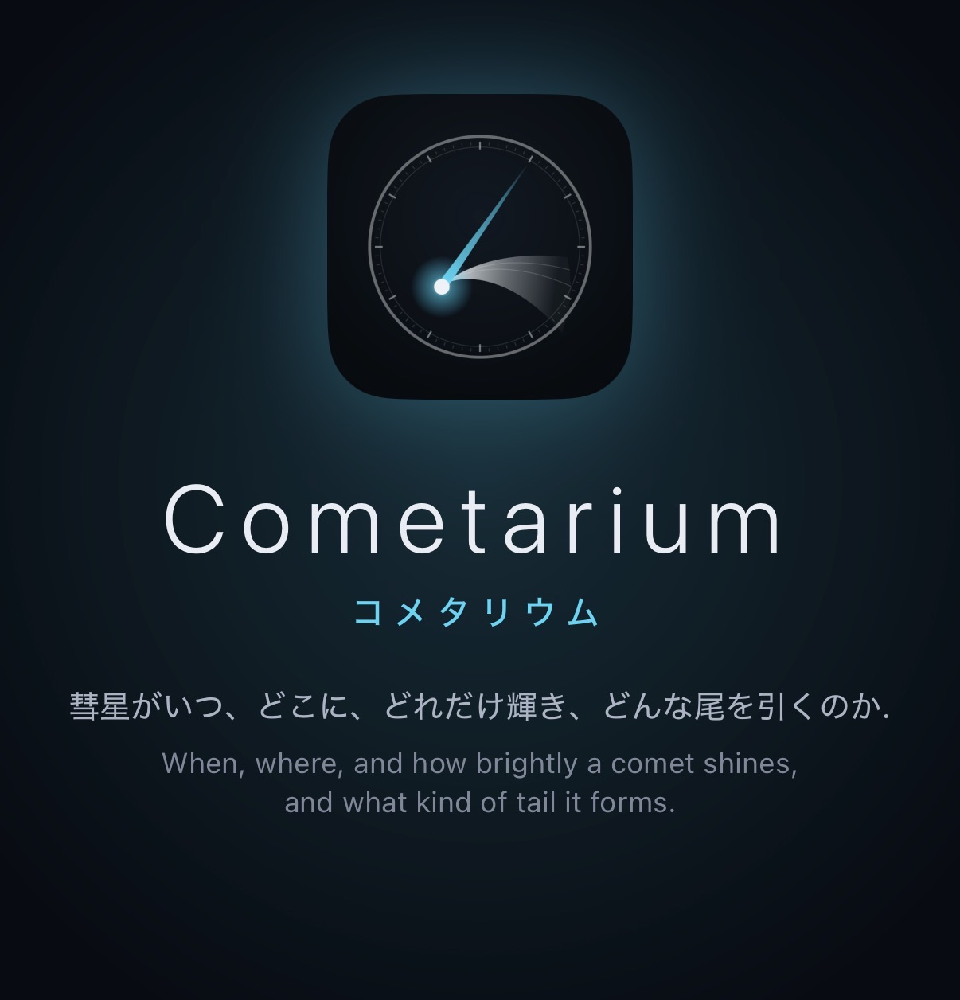
日本語マニュアル
Cometarium は、彗星がいつ・どこに見え、どんな尾を引くのかを描く天文アプリです。 背景の星は実際の星表(Bright Star Catalogue、6.5 等まで)、彗星の位置は NASA/JPL の 軌道解を出発点にした N 体積分の結果で、尾は太陽光の輻射圧と太陽風のモデルから 計算しています。通信は一切行いません。必要なデータはすべてアプリに入っています。
無料版に収録されているのは 10P/Tempel 2 です。2026年8月5日に近日点を通過し、 地球に 0.4 天文単位まで近づく、この回帰でよく見える周期彗星です。
共通の操作
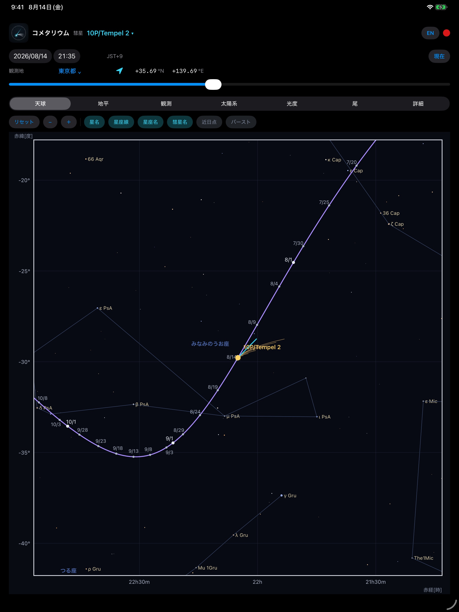
| 場所 | 内容 |
|---|---|
| 最上段 | アプリのアイコン(押すと作者のページ)、対象彗星のメニュー、EN(日英切替)、赤い丸(ナイトモード) |
| 2段目 | 日付と時刻(直接入力できます)、時刻系と時差(例: JST+9)、現在ボタン |
| 3段目 | 観測地(都道府県/世界の都市)、➤(現在位置を取得)、緯度・経度(直接入力できます) |
| 4段目 | 時刻の微調整(−1h〜+1h)と 南中(その日に彗星が最も高くなる瞬間へ)。地平・観測で表示 |
| スライダ | 収録期間を端から端まで |
| パネル切替 | 天球 / 地平 / 観測 / 太陽系 / 光度 / 尾 / 詳細 |
天球 — 星座の中の通り道
赤道座標(J2000.0)で、収録期間の経路を紫の線で描きます。横軸の赤経は 右へ行くほど小さくなります(西が右)。日付の目盛は「彗星が画面上でどれだけ速く 動くか」で決まるので、拡大すると月初だけだった目盛が半月ごと・10日ごとと自動的に 細分されます。星の色は B−V 色指数、大きさは実視等級です。
現在位置には尾が付きます。オレンジの扇がダスト尾(同じ大きさの塵が描く曲線＝ シンダイン)、水色がプラズマ尾で、いずれも「尾」パネルの設定がそのまま反映されます。
地平 — 実際に空を見上げた向き
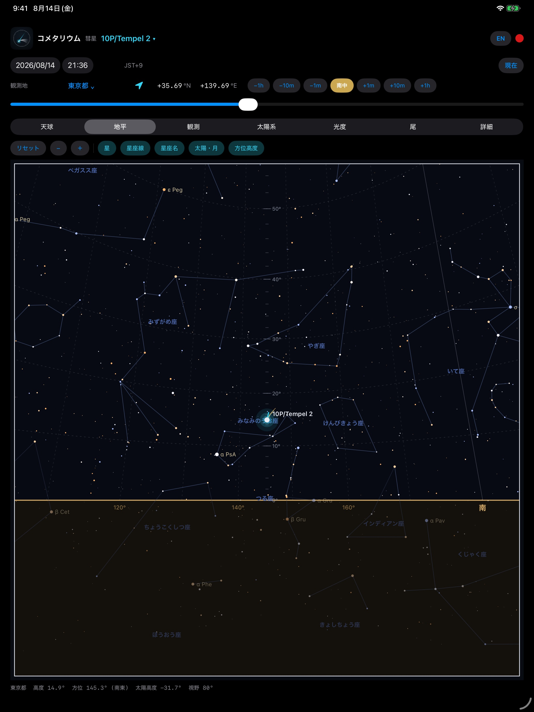
観測地の空を、彗星を中心に心射図法で描きます。空の色は太陽高度で変わり (昼の青 → 薄明 → 夜)、地平線と地面、方位(東西南北と度数)、高度の目盛が入ります。 方位は右へ行くほど増えます(北を向けば東が右、東を向けば南が右)。
- 目盛は視野に追従します。視野60°なら高度10°ごと(細目盛2°)、視野10°なら1°ごと
- 地平線下 20° までの星・太陽・月も薄く描くので、これから昇ってくる星が分かります
- 彗星が沈んでいるときは視点が地平線で止まり、「地平線の下」と表示されます
- 彗星名はドラッグで移動できます
観測 — 一晩の高度と空の暗さ
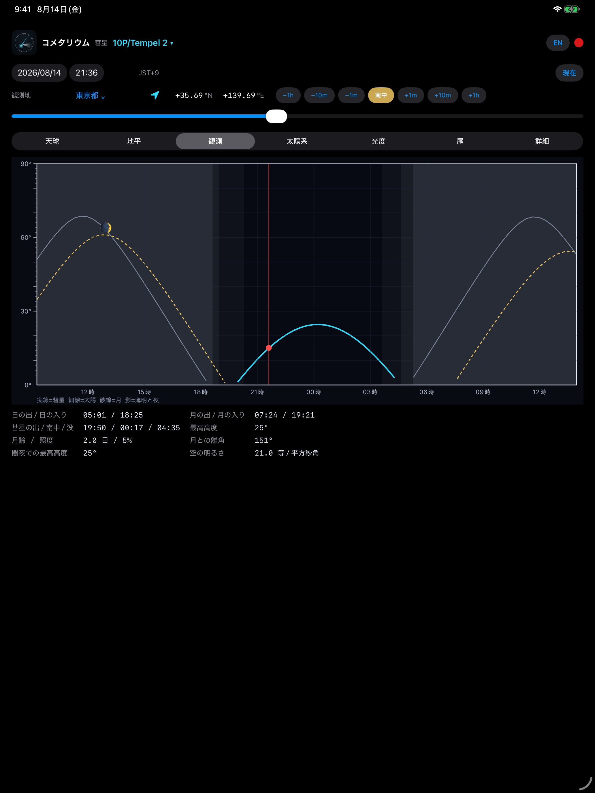
観測地の一晩について、彗星・太陽・月の高度を描きます。図の下に、日の出/入り、 月の出/入り、彗星の出・南中・没、最高高度、月齢と照度、月との離角、闇夜での最高高度、 空の明るさ(Krisciunas & Schaefer 1991 の式)が出ます。
太陽系 — 軌道を上から、横から
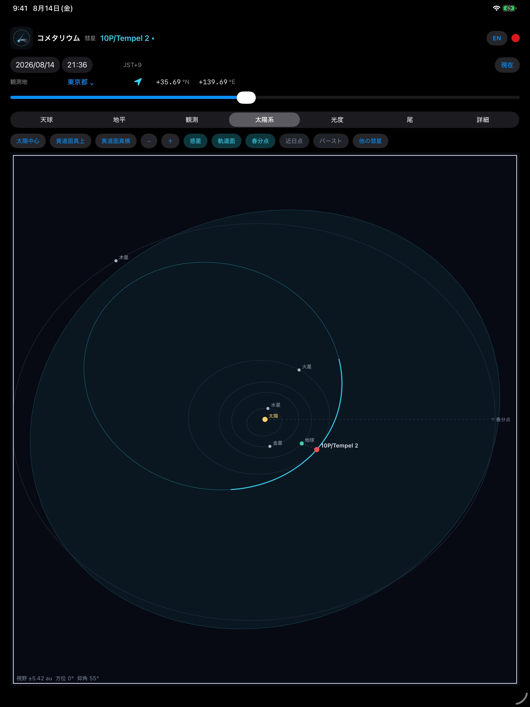
ドラッグで視点が回り、太陽中心・地球中心・彗星中心を切り替えられます。彗星の軌道は 全体を細く、収録期間を太く描きます。軌道面の塗り、春分点、近日点、バーストの表示は ボタンで切り替えます。「他の彗星」で比較したい彗星を重ねられます(無料版は 220P のみ、 ほかは Pro)。
光度 — 明るさの実測と予測
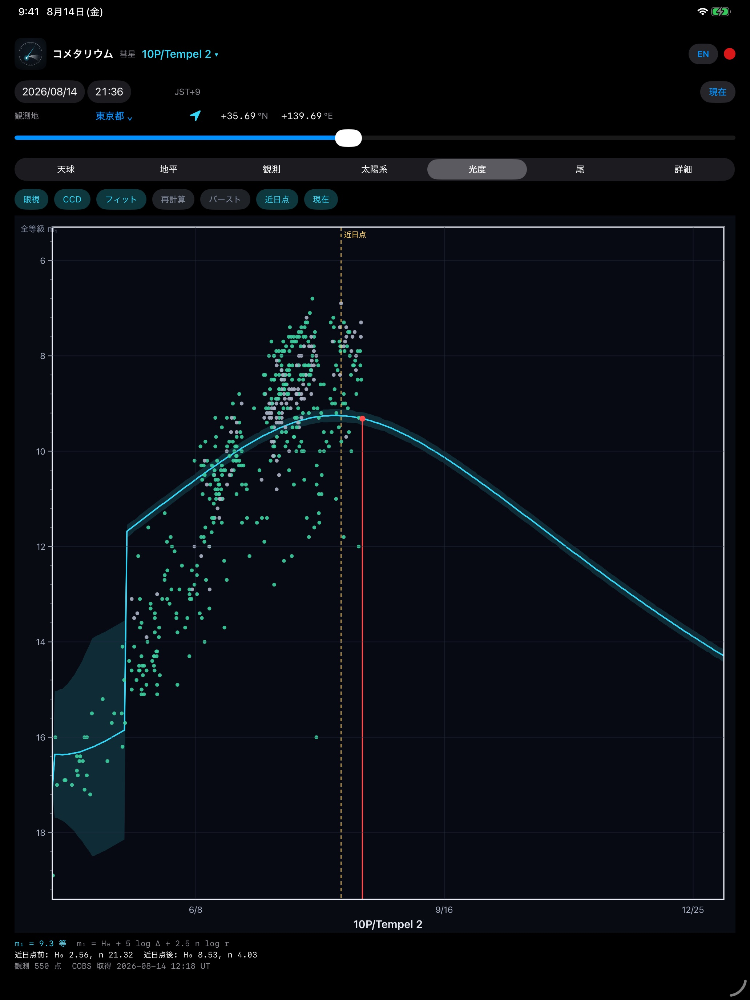
COBS の眼視(灰)と CCD(緑)の観測に、当てはめた光度式と ±3σ 帯を重ねます。図の下に
現在の予測等級 m₁、式 m₁ = H₀ + 5 log Δ + 2.5 n log r、近日点前後それぞれの
H₀ と n、観測数、COBS を読んだ日時が出ます。縦軸の刻みは等級の幅に合わせて自動で
細かくなります。
尾 — ダストとプラズマの形
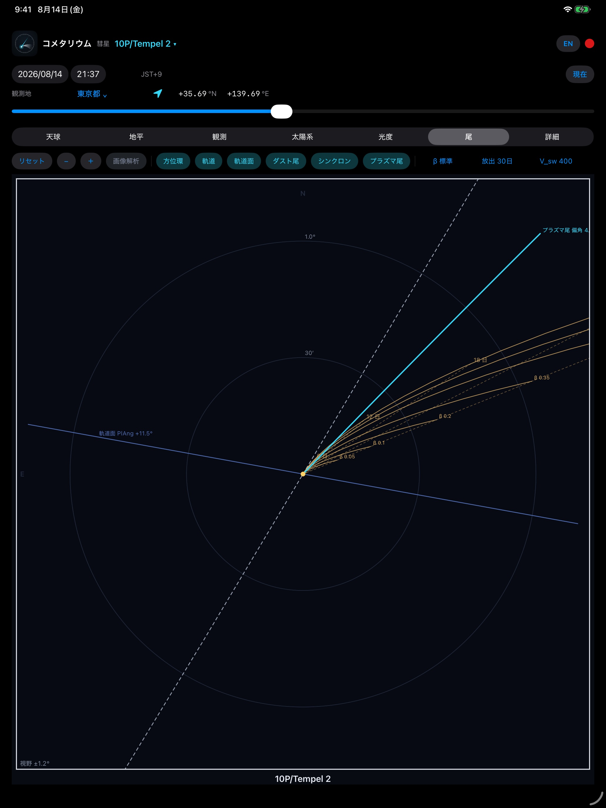
核を中心に、方位環(北が上、東が左)で尾の形を描きます。β(輻射圧と重力の比＝ 粒径)の粗さ、放出時刻(3〜90日前)、太陽風速度 V_sw、尾長を選ぶと、 その場で計算し直します。ここでの設定は天球と地平の尾にもそのまま反映されます。
詳細 — その瞬間の数値
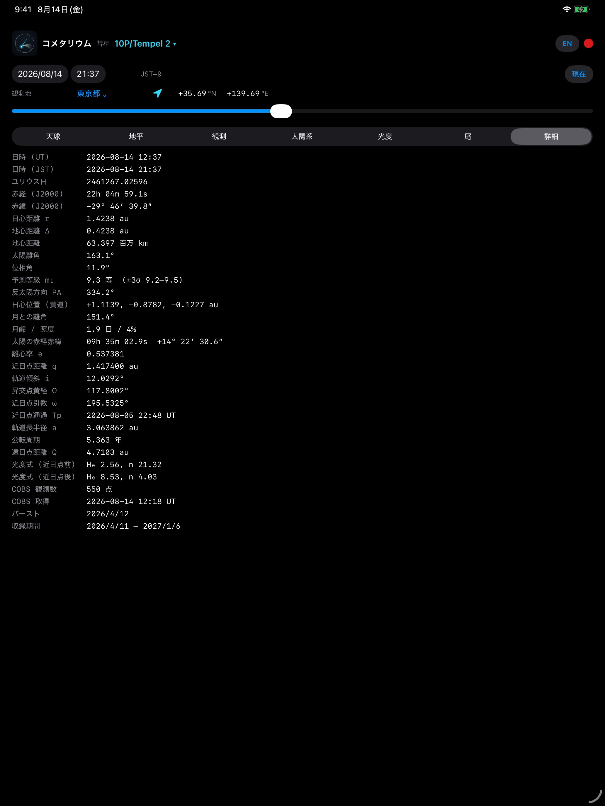
日時(UT/JST/ユリウス日)、赤経赤緯、日心距離 r、地心距離 Δ(au と km)、太陽離角、位相角、 予測等級 m₁(±3σ)、反太陽方向の位置角、日心位置、月との離角と月齢、太陽の位置、軌道6要素、 軌道長半径・公転周期・遠日点、光度式、COBS の観測数と取得日時、バーストの日付、収録期間。 距離と位置は光行時間を補正済みです。
iPhone での表示

無料版と Pro 版
| 項目 | Cometarium(無料) | Cometarium Pro |
|---|---|---|
| 対象彗星 | 10P/Tempel 2 のみ | 収録彗星すべて |
| 天球・地平・観測・太陽系・光度・尾・詳細 | ○ | ○ |
| 太陽系の比較彗星 | 220P のみ | 自由に追加 |
| 写真の位置測定・測光・尾の解析 | — | ○ |
| 最新データの取得と光度曲線の再計算 | — | ○ |
| ボートルの生存限界図 | — | ○ |
計算とデータの出どころ
| 内容 | 出どころ |
|---|---|
| 軌道と天体暦 | NASA/JPL Horizons・SBDB・NAIF SPICE(DE440 / sb441) |
| 軌道の積分 | ASSIST(REBOUND 系)。惑星と主要小惑星の摂動、非重力加速度を含む |
| 光度と増光 | COBS(Comet Observation Database)の観測に基づく光度式の当てはめ |
| 星表・星座 | Bright Star Catalogue(V ≤ 6.5)、d3-celestial の星座線 |
| 太陽・月・惑星 | Meeus『Astronomical Algorithms』と Standish の近似要素(アプリ内で計算) |
| 尾の形状 | Finson–Probstein のシンダイン/シンクロン、Burns–Lamy–Soter の β、太陽風による吹き流し |
| 空の明るさ | Krisciunas & Schaefer 1991 (PASP 103, 1033) |
Credit: NASA/JPL-Caltech. Comet magnitude data courtesy of COBS Comet Observation Database.
よくある質問
Q. オフラインでも使えますか。 はい。位置計算も星図もアプリ内で完結し、通信は行いません。
Q. 位置情報は何に使いますか。 観測地の緯度経度を入れるためだけです。端末の外には出しません。
Q. ナイトモードとは。 画面全体を赤くして、暗順応を保ったまま読めるようにする表示です。
Q. どのくらい正確ですか。 位置は JPL の軌道解を出発点にした N 体積分で、実測とほぼ一致します。彗星の明るさは本質的に予測が難しく、実際の観測とずれることがあります。
Q. 彗星を増やせますか。 無料版は 10P/Tempel 2 専用です。ほかの彗星は Cometarium Pro でご利用ください。
English Manual
Cometarium shows where a comet is, when it can be seen and how its tails lie on the sky. Background stars come from the Bright Star Catalogue (to V = 6.5), the comet's position from an N-body integration started at the NASA/JPL orbit solution, and the tails from radiation-pressure and solar-wind models. The app never uses the network. The free edition covers 10P/Tempel 2.
The bar at the top
The app icon (a link to the author), the comet menu, EN for the language and the red dot for night mode. Below it the date and time — type into them if you like — the clock and its offset from UT, and Now. Below that the observing site (world capitals and second cities in English), a pin that fills in where you are, and the coordinates. On the horizon and night panels a row of fine steps appears, with Transit in the middle: the moment the comet crosses the meridian that day.
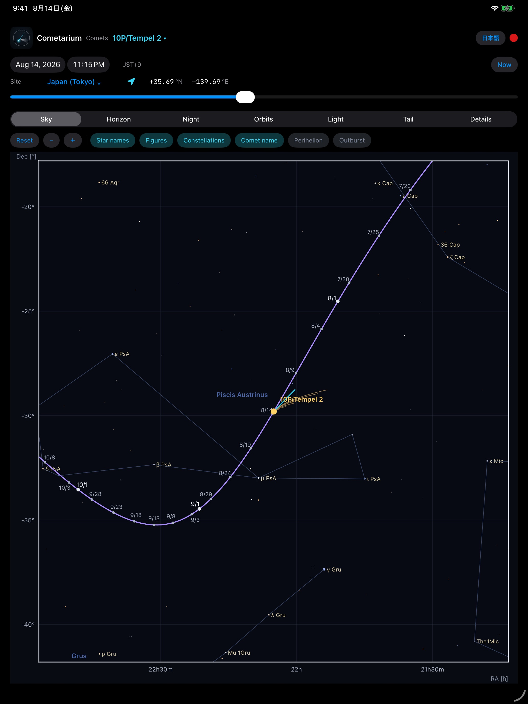
The seven panels
| Panel | What it shows |
|---|---|
| Sky | The path among the stars, in J2000 equatorial coordinates. Dates subdivide themselves as you zoom in. |
| Horizon | The comet where you would look for it: sky colour by solar altitude, ground, compass, altitude scale. The sky is drawn to 20° below the horizon. |
| Night | One night of altitudes for comet, Sun and Moon, with rise/transit/set, moon phase and sky brightness. |
| Orbits | The Sun, the eight planets and the comet in three dimensions, from any angle. |
| Light | COBS observations, the fitted light curve with its ±3σ band, and the fit's own numbers. |
| Tail | Syndynes, synchrones and the plasma tail, computed live from β, the emission window, the wind speed and the length you choose. |
| Details | Thirty numbers for the instant on show, from right ascension to the orbital elements. |
Drag to move, pinch to zoom, Reset to start again. On the Mac the arrow keys walk the horizon view.
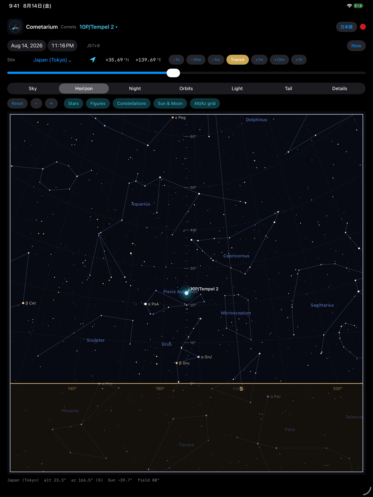
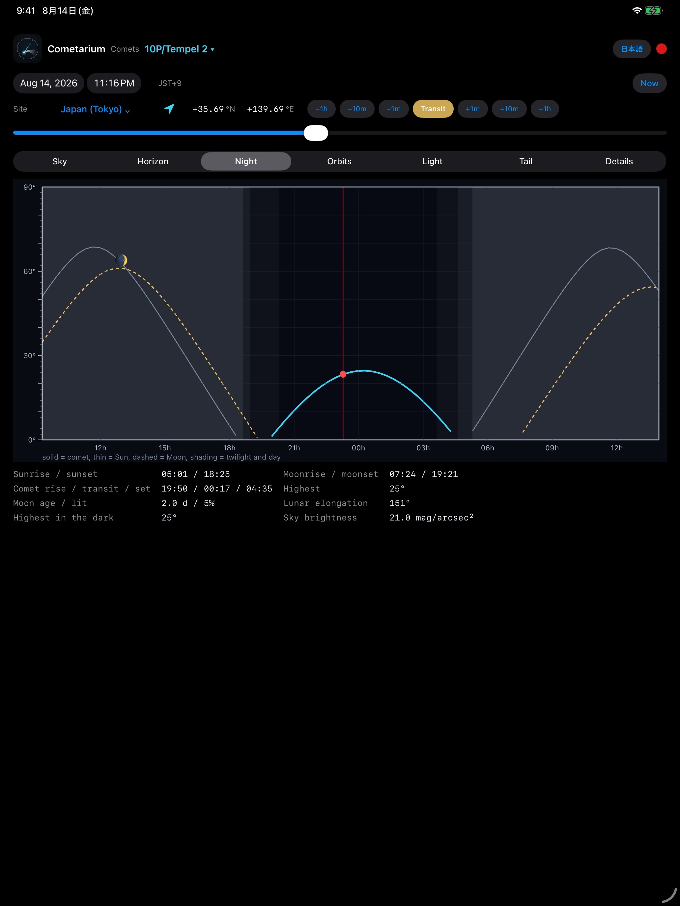
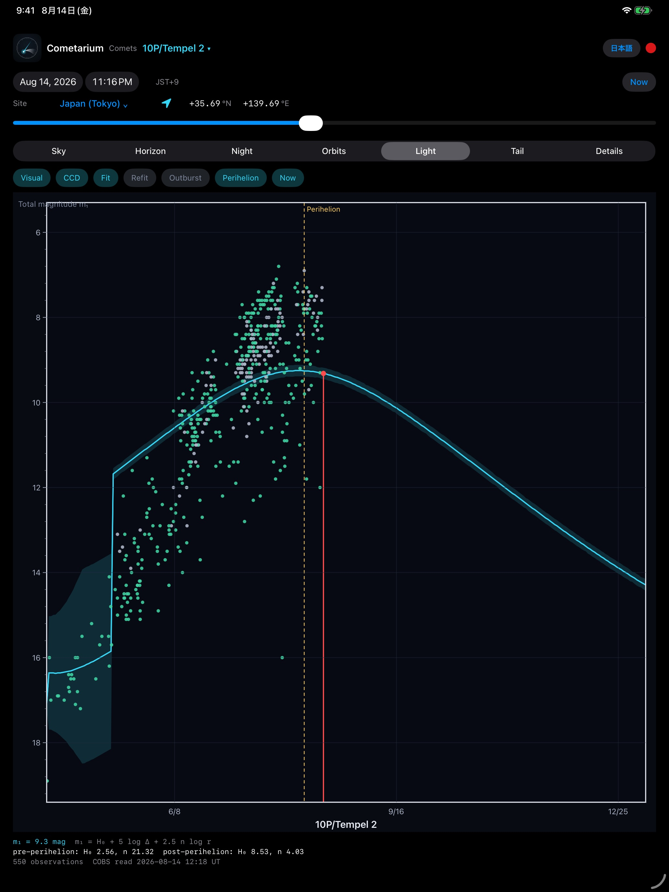
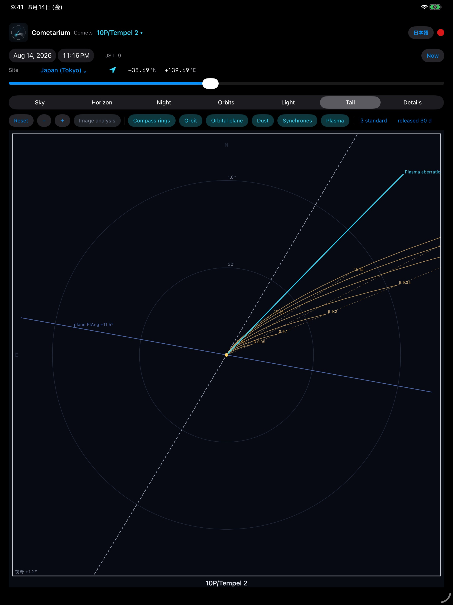
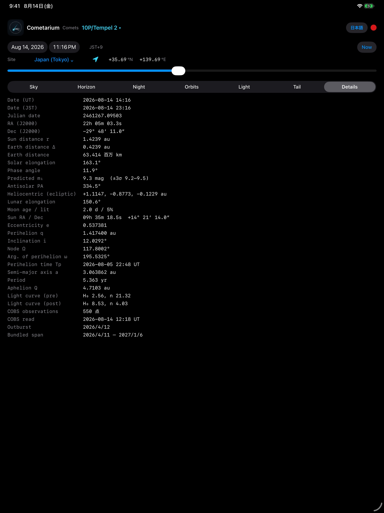
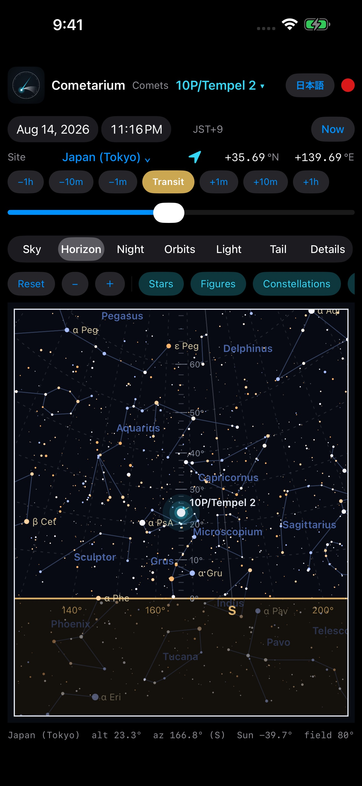
Free edition and Pro
The free edition follows 10P/Tempel 2, and can draw 220P alongside it in the solar-system view. Cometarium Pro carries the whole catalogue, measures your own photographs (astrometry, aperture photometry, FITS/WCS, plate solving), refits the light curve from the newest COBS data, and adds the Bortle survival chart.
Sources
Orbits and ephemerides: NASA/JPL Horizons, SBDB and NAIF SPICE (DE440, sb441). Integration: ASSIST/REBOUND, with planetary and main-belt perturbations and non-gravitational acceleration. Photometry: COBS. Stars: Bright Star Catalogue. Sun, Moon and planets: Meeus, Astronomical Algorithms, and Standish's approximate elements, computed inside the app. Tails: Finson–Probstein syndynes and synchrones, Burns–Lamy–Soter β, and a solar-wind windsock model. Sky brightness: Krisciunas & Schaefer 1991. Credit: NASA/JPL-Caltech; comet magnitude data courtesy of COBS.
プライバシー / Privacy
本アプリはいかなるデータも収集・送信しません。 / The app collects and transmits no data whatsoever. プライバシーポリシー / Privacy Policy